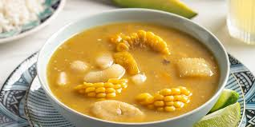

el sancochoes sin duda el plato más apreciado de los dominicanos.
este plato es un poco dificil de hacer pero es muy bueno
lo elegi por que es mi segundo plato favorito

ingredientes
carne
aseite
maiz
agua
viveres
pasos
echas la carne
despùes sasonas la carne
echas el aseite en un sarten
echas la carne
esperas a que se cocine
en una oya echas la carne y el agua
echas los viveres
lo mesclas y lo echas en una cantina
esta receta fue copiada de la pagina:https://www.cocinadominicana.com/